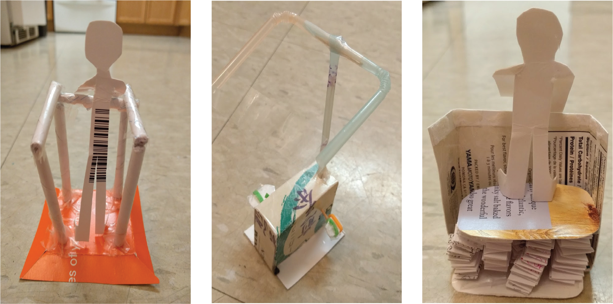
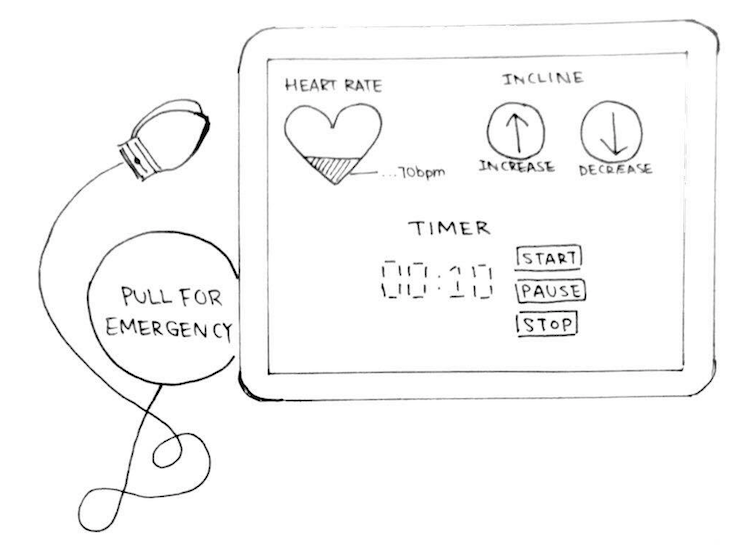

Level UP
Introduction to design
Description
Last term, our group completed our SYDE161 (Introduction to Design) design project with the aim of increasing the strength of balance-related muscles in older adults. After conducting testing and research, the high fidelity prototype was built as an aerobics platform that is elevated above the ground and can be inclined to provide a higher challenge. It has adjustable-height handles around the sides of the machine to provide support while exercising and a safety alert system that rings bells if the user falls while exercising to call the attention of nearby passersby or family members.
The Problem
There is an evident lack of regular physical exercise with older adults. Since the older adult population is drastically increasing due to the influx of aging baby boomers, the consequences of insufficient exercise are becoming urgent.
Our situation of concern states that as older adults age, the risk for falling increases as muscle size and strength decreases with age. Furthermore, the fear of falling is most likely to increase the chances of falling in older adults. Research has demonstrated that there exists a distinct inverse relationship between physical activity and the risk of falling, yet through exercise, the post intervention strength was evidently improved.
User Needs
The solution’s aim is to achieve the objective of improving the physical health, specifically the ability to balance, for older adults through exercise. In order to do so, criteria, constraints and stakeholder considerations must be taken into account. For instance, a criteria is that the more variety of exercises the design can accommodate, the better.
Furthermore, a user need is that the more tailored the exercises are to an individual, the safer the device will be for the older adult. If there are adjustments for different levels of physical ability within the machine, secondary users such as physiotherapists will be less concerned for the safety of the senior, and it is more likely to improve their balance rather than to injure themselves.
Primary User Persona

Prototyping
We began with 3 low fidelity prototypes made out of tissue boxes to simply illustrate the basic pieces of our design.

The Final Product
After 4 months of planning, designing, user testing and going through many iterations, we finally have a product! Our final sulotion incorporates a variety of adjustable features which in result, increases older adults' motivation to exercise due to the wide range of exercise that can accommodate an older adult.
The design of the adjustable handlebars are similar to the adjustable the handlebars of luggage. The adjustments of the handlebar can be made by simply pushing the round tip button which would thus allow the user to adjust the height accordingly.

The handlebars on the side of the would include cushions for better grip and provide further safety features that would prevent users from injuring themselves if they were to fall.
The handle bars would only have base poles on the two front ends of the device, so the user does not have to adjust the height on all four corners, only two, to make the device easier to use.
Ideally, the board would become adjustable electronically. A user interface would be created that would serve many different functions. A timer, heart rate monitor, suggested exercises, goal, and buttons to adjust the height of the board would be included on the screen.

Beside the user interface would be a clip for the user to attach him/herself with that if tugged on, will alert or call a family member or caregiver through a corresponding app.

The board would slowly move up or down as the respective button is held down, letting the user choose the height they prefer. The board would also be made of a cushion material that is firm, but still relatively soft for better contact with user’s feet to prevent slipping.
 Watch Video
Watch Video